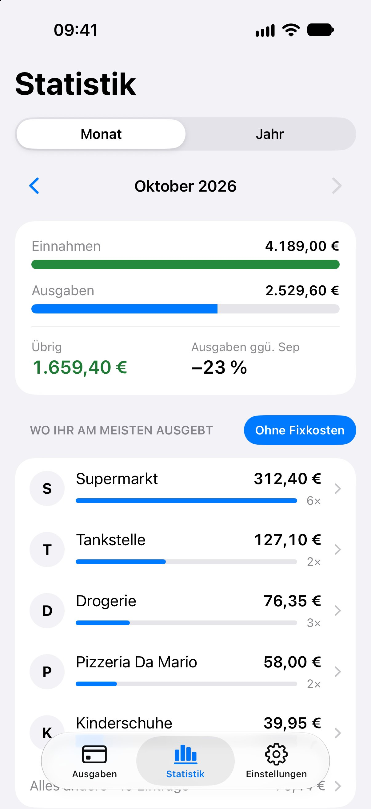
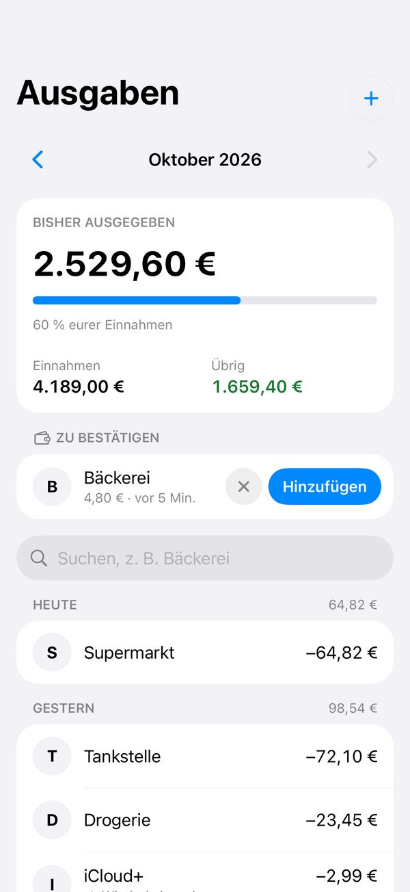
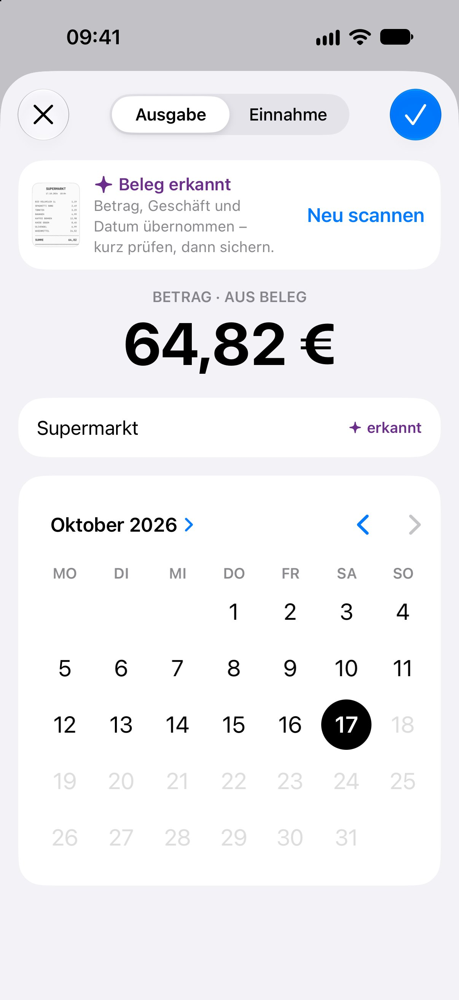
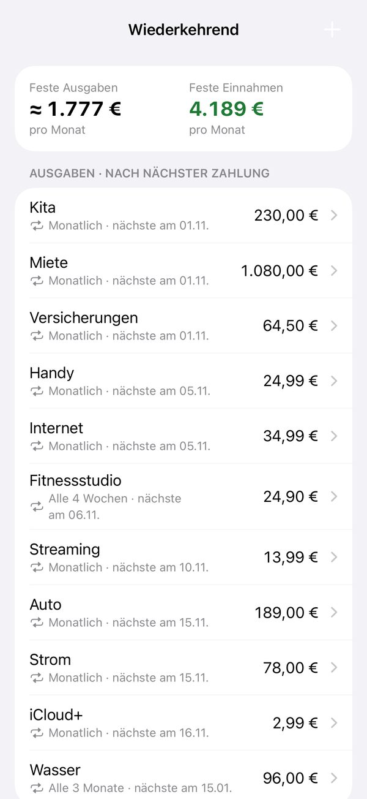
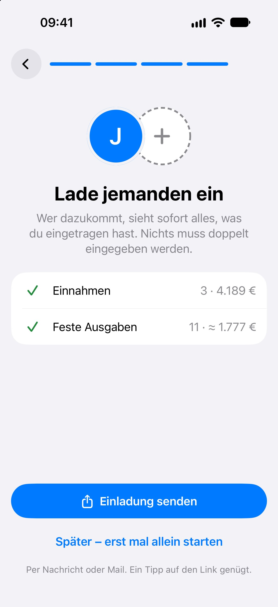
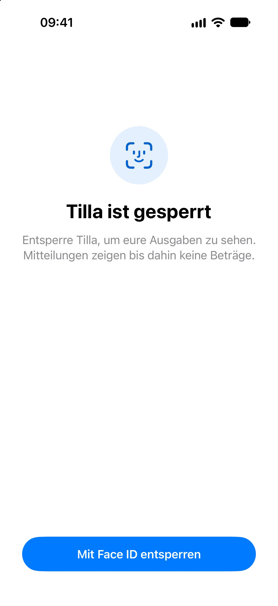

Gemeinsame Ausgaben im Blick
Das gemeinsame Haushaltsbuch für Paare, Familien und WGs: Ihr tragt ein, was ihr ausgebt, und seht jederzeit, wie viel von euren Einnahmen diesen Monat noch übrig ist – ohne Kategorien, Budgets oder Tabellen.


- Kein Server
- Kein Tracking
- Keine Werbung
- Kein neues Konto
So funktioniert Tilla

In Sekunden eingetragen
Betrag tippen, schreiben wofür, fertig. Das Datum steht schon auf heute, ein anderer Tag ist nur einen Tipp entfernt.
Mit einer Automation in der Kurzbefehle-App schlägt Tilla nach jeder Zahlung mit dem iPhone die Ausgabe vor. Ein Tipp auf „Hinzufügen“ genügt – oder Tilla trägt sie direkt ein. Zum Kurzbefehl →
Seht, wohin euer Geld geht
Die Statistik zeigt Monat und Jahr: Einnahmen, Ausgaben, was übrig bleibt und wo ihr am meisten ausgebt. Mit „Ohne Fixkosten“ seht ihr, was im Alltag zusammenkommt.

Feste Ausgaben tragen sich selbst ein
Miete, Kita, Strom oder das Fitnessstudio legt ihr einmal an. Tilla trägt sie am Fälligkeitstag ein – monatlich, alle zwei Wochen oder wie es bei euch eben ist. Ändert sich ein Betrag, gilt er ab dem Monat, den ihr wählt.

Gemeinsam über iCloud
Ladet alle, mit denen ihr zusammenwohnt, per Nachricht ein – Partnerin oder Partner, Familie oder WG. Alle sehen sofort dasselbe, nichts wird doppelt eingetragen. Kein neues Konto, kein Passwort – Tilla nutzt eure Apple-ID.

Privat. Kein Server, kein Tracking.
Eure Daten liegen nur auf euren Geräten und in eurem iCloud. Es gibt keinen Tilla-Server, keine Werbung und kein Tracking. Auf Wunsch schützt Face ID oder Touch ID die App.
Außerdem
Siri und Kurzbefehle
Ausgaben per Sprache eintragen und fragen, wie viel ihr diesen Monat ausgegeben habt.
Tägliche Erinnerung
Falls ihr etwas vergessen habt.
Hell- und Dunkelmodus
Folgt der Einstellung eures iPhones.
Fünf Sprachen
Deutsch, Englisch, Spanisch, Französisch und Italienisch.
Bald im App Store
Tilla braucht iOS 18 oder neuer und ein iCloud-Konto.
Über Apples TestFlight-App, solange Plätze frei sind.
Fragen oder Feedback? Zum Support